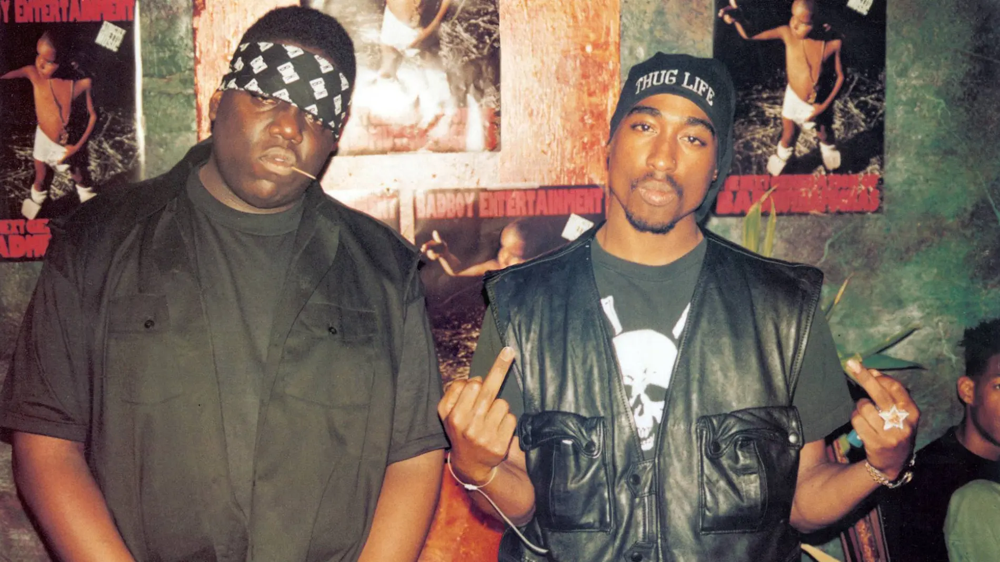
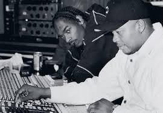
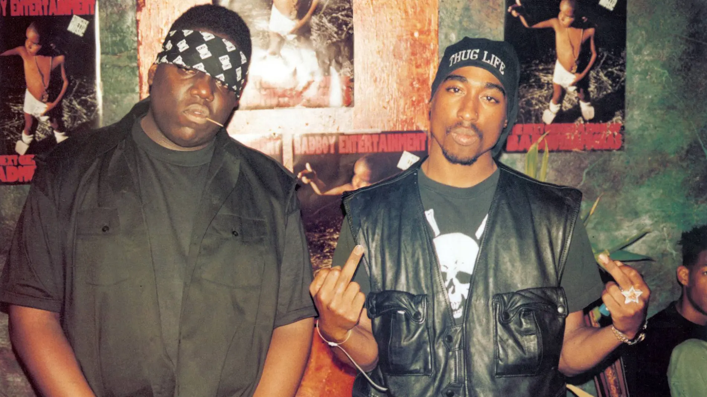
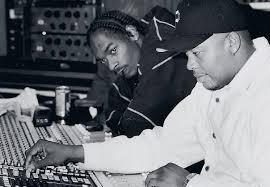

La Moda de los Noventa en el Movimiento Hip Hop
La Moda en el Movimiento Hip Hop de los Noventa
La moda en el movimiento hip hop de los noventa fue una expresión vibrante y audaz de la identidad cultural. Los artistas de hip hop adoptaron un estilo distintivo que combinaba ropa deportiva, prendas holgadas y accesorios llamativos. Este estilo no solo reflejaba la actitud rebelde y desafiante del hip hop, sino que también se convirtió en una declaración de independencia y resistencia contra las normas sociales establecidas.
Las marcas de ropa como FUBU, Karl Kani y Cross Colours se convirtieron en sinónimo de la moda hip hop. Estas marcas fueron creadas por diseñadores afroamericanos que entendían la cultura y las necesidades de la comunidad hip hop. La ropa era colorida, cómoda y accesible, lo que permitía a los jóvenes expresar su individualidad y pertenencia al movimiento.
Los videoclips de la época mostraban a los artistas de hip hop vistiendo ropa de estas marcas, lo que ayudó a popularizar el estilo en todo el mundo. Las gorras de béisbol, las chaquetas bomber, los pantalones anchos y las zapatillas deportivas eran elementos esenciales del guardarropa hip hop. Además, la joyería ostentosa, como cadenas de oro y relojes llamativos, se convirtió en un símbolo de éxito y estatus dentro de la comunidad.
La moda hip hop de los noventa también tuvo un impacto significativo en la moda mainstream. Diseñadores de alta costura comenzaron a incorporar elementos del estilo hip hop en sus colecciones, y celebridades de otros géneros musicales y del cine adoptaron el look. La influencia del hip hop en la moda continúa siendo evidente hoy en día, con muchos de los estilos y tendencias de los noventa resurgiendo en la moda contemporánea.
El hip hop no solo influyó en la moda, sino también en otros aspectos culturales como el arte y el lenguaje. Los grafitis se convirtieron en una forma de expresión artística y política, y muchas palabras y frases del argot hip hop se integraron en el lenguaje cotidiano. La danza también fue una parte integral del movimiento, con estilos como el breakdance ganando popularidad en todo el mundo.
Los eventos y festivales de hip hop de los noventa reunieron a miles de personas y ayudaron a difundir la cultura hip hop a nivel global. Estos eventos no solo presentaban música, sino también competiciones de baile, exhibiciones de grafiti y desfiles de moda. Fueron una plataforma para que los artistas emergentes mostraran su talento y conectaran con la comunidad.
Además, el hip hop de los noventa fue una herramienta poderosa para abordar temas sociales y políticos. Las letras de las canciones a menudo reflejaban las luchas y las injusticias que enfrentaban las comunidades afroamericanas y latinas en los Estados Unidos. Canciones como "Fight the Power" de Public Enemy y "Changes" de Tupac Shakur se convirtieron en himnos de resistencia y cambio social.
Fotos
 



.jpeg)